"FoodWala is an enterprise-grade food discovery and delivery web platform designed for Bengaluru, combining real-time Haversine geolocation, typo-tolerant Levenshtein search, Razorpay sandbox checkout, and OWASP-grade security."
Languages
- Java 17 (Core Java, OOP, Streams)
- JavaScript ES6+ (Async/Await, DOM)
- SQL (MySQL 8.0 DDL/DML, Procedures)
- HTML5 & CSS3 (Semantic Web, Grid)
Backend & MVC
- Java Servlets & JSP (MVC Pattern)
- Node.js & Express (Auth Microservice)
- Apache Tomcat 11.0 Server
- DAO Abstraction & Connection Pooling
Database & Storage
- MySQL 8.0 Relational DB (
fudwala) - 19 Normalized Tables (InnoDB Engine)
- ACID Atomic Transactions
- Prepared Statements (Anti-SQLi)
Frontend & UI
- Bootstrap 5.3 & Bootstrap Icons
- Leaflet.js (Geolocation Maps)
- jsPDF (Client-Side Tax Invoices)
- SweetAlert2 User Notifications
Security & Payments
- Argon2id Cryptographic Hashing
- 5-Attempt Lockout Brute-Force Shield
- Razorpay Sandbox (HMAC SHA-256)
- Dual EmailJS Receipt Dispatcher
Developer Tooling
- Eclipse IDE 2026 & VS Code
- MySQL Workbench & Postman
- Git & GitHub Pages Hosting
- Render / Cloud MySQL Deployment
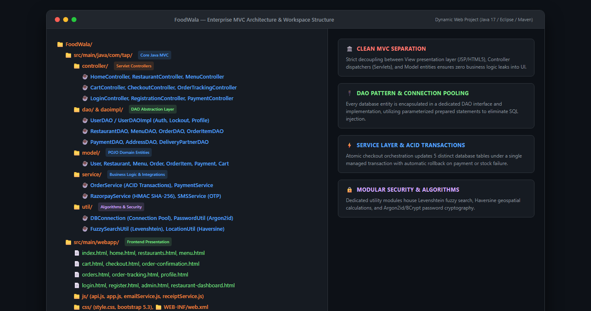
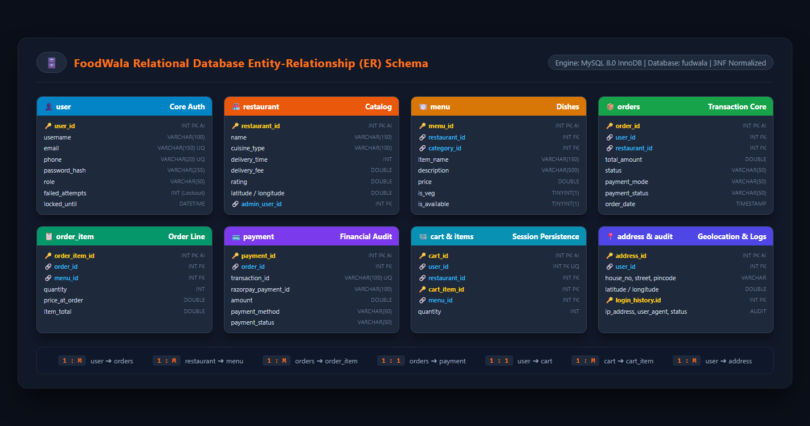
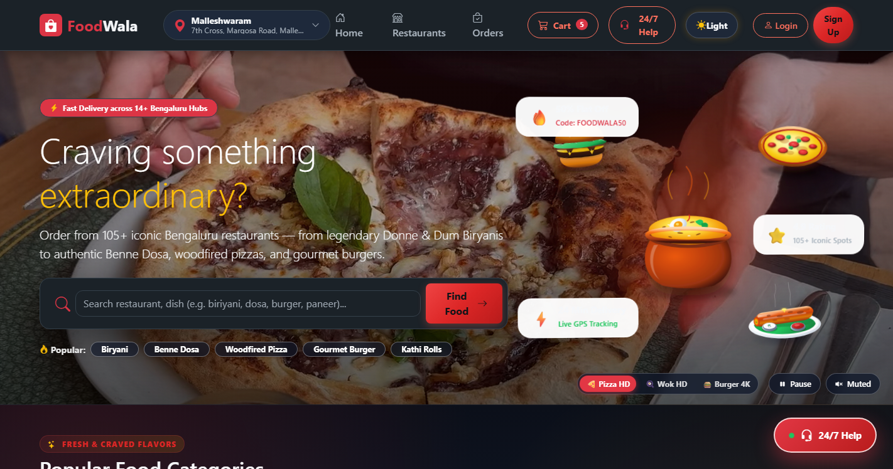
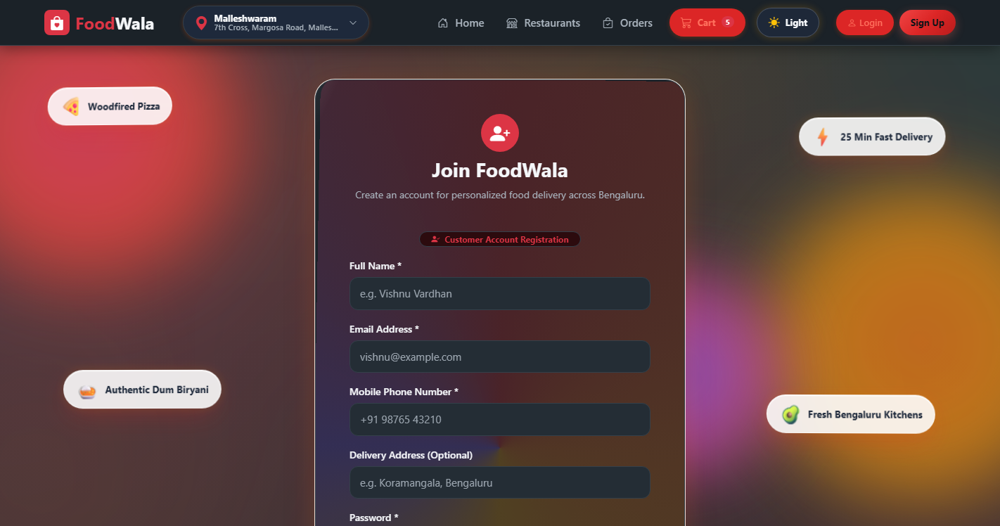
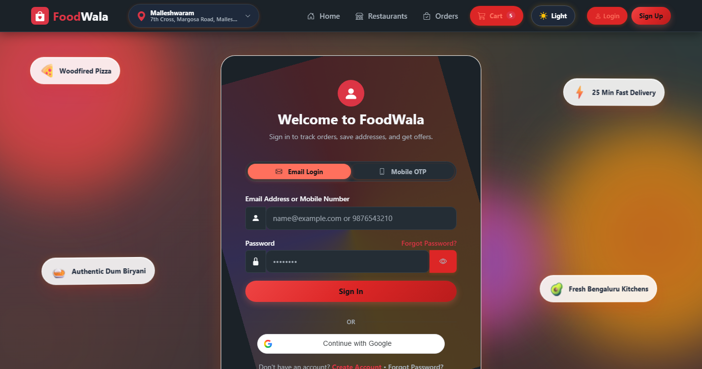
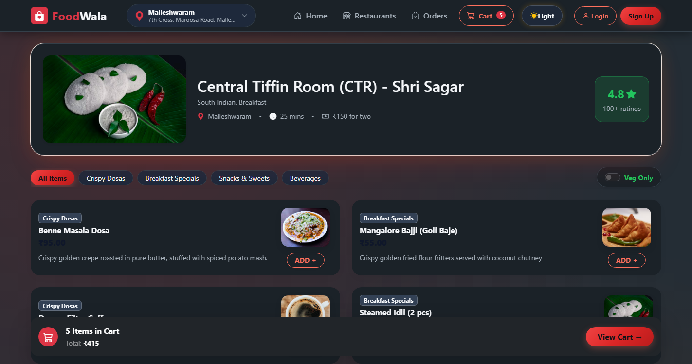
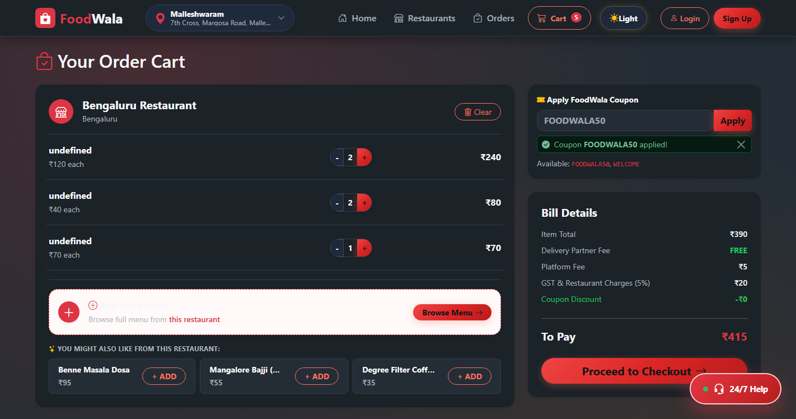
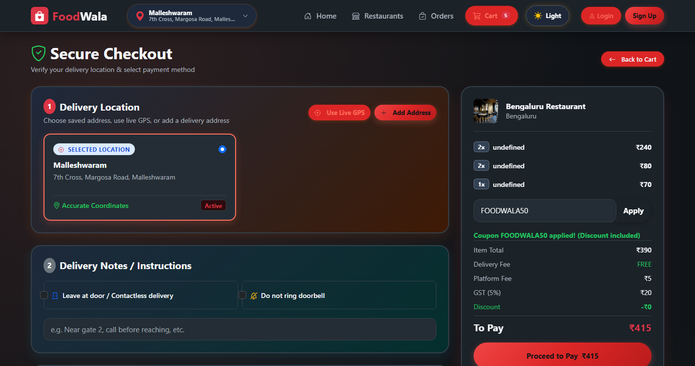
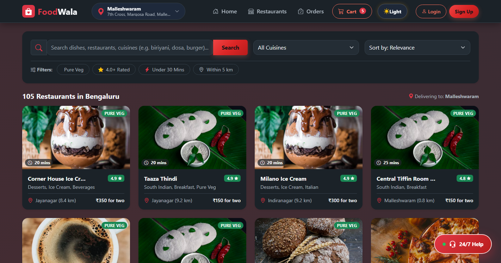
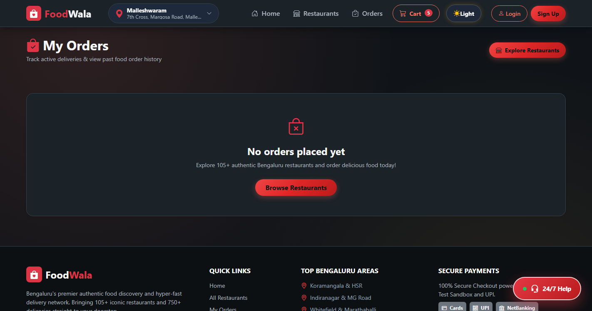

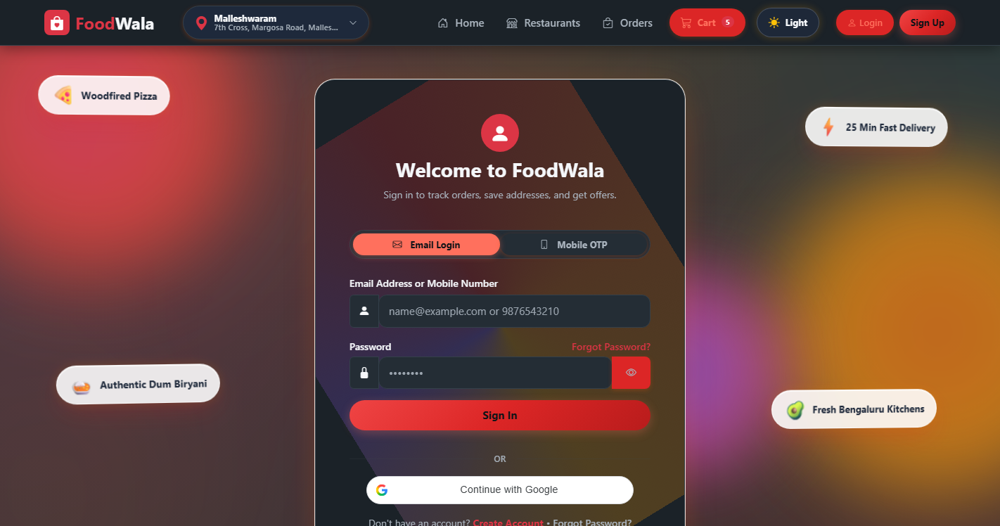
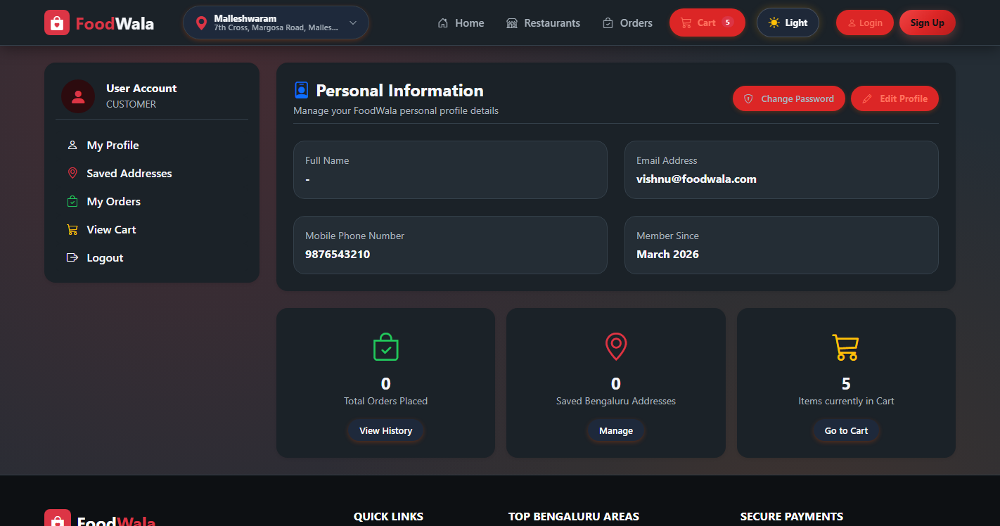
Hyperlocal Geolocation Engine
Integrated Leaflet.js interactive maps calculating aerial distances between user coordinates and restaurants via the Haversine formula, driving dynamic delivery fees.
Typo-Tolerant Smart Search
Custom Levenshtein distance algorithm matching dish and restaurant names even with typos (e.g., 'bryani' ➔ 'Biryani', 'vidyarti' ➔ 'Vidyarthi Bhavan').
OWASP Enterprise Security
State-of-the-art Argon2id password hashing, real-time client/server duplicate phone detection with HTTP 409 modals, and automated 5-attempt account lockout.
Razorpay & Dual EmailJS Receipts
Complete Razorpay sandbox checkout with SHA-256 HMAC verification, dual EmailJS receipt dispatch (customer + admin), and instant jsPDF tax invoice generation.
1. Haversine Distance (LocationUtil.java)
double dLat = Math.toRadians(lat2 - lat1);
double dLon = Math.toRadians(lon2 - lon1);
double a = Math.sin(dLat/2) * Math.sin(dLat/2) +
Math.cos(Math.toRadians(lat1)) * Math.cos(Math.toRadians(lat2)) *
Math.sin(dLon/2) * Math.sin(dLon/2);
double c = 2 * Math.atan2(Math.sqrt(a), Math.sqrt(1 - a));
return 6371 * c; // Aerial Distance in Kilometers
2. Levenshtein Dynamic Programming (FuzzySearchUtil.java)
int[][] dp = new int[s1.length() + 1][s2.length() + 1];
for (int i = 0; i <= s1.length(); i++) dp[i][0] = i;
for (int j = 0; j <= s2.length(); j++) dp[0][j] = j;
for (int i = 1; i <= s1.length(); i++) {
for (int j = 1; j <= s2.length(); j++) {
int cost = (s1.charAt(i-1) == s2.charAt(j-1)) ? 0 : 1;
dp[i][j] = min(dp[i-1][j]+1, dp[i][j-1]+1, dp[i-1][j-1]+cost);
}
}
3. ACID Transaction Isolation with Rollback (OrderService.java)
con.setAutoCommit(false); // Begin managed database transaction
try {
int orderId = orderDAO.createOrder(order, con);
orderItemDAO.insertItems(orderId, cartItems, con);
paymentDAO.recordPayment(orderId, payment, con);
cartDAO.clearUserCart(userId, con);
con.commit(); // Atomic commit across all 4 database tables
} catch (Exception e) {
con.rollback(); // Complete rollback on payment or stock failure
throw new OrderProcessingException("Checkout failed, transaction rolled back", e);
}
The Problem
- Checkout Double-Clicks: Rapid user double-clicks or slow network connections caused duplicate order insertions and repeated payment authorizations.
- Orphaned Records: If network disconnection happened while inserting cart items or recording payment, the order row remained stranded without items.
- Coupon Concurrency Exploits: Users were able to apply single-use promo codes simultaneously on multiple tabs before the usage flag was committed.
The Architectural Solution
- Atomic ACID Session: Wrapped orders, order_item, payment, and cart_clear inside a single managed connection with
con.setAutoCommit(false)andcon.rollback(). - Client-Side UI Debounce & Idempotency Key: Disabled checkout buttons immediately on click and passed a unique Razorpay transaction token to enforce database uniqueness.
- Row-Level Coupon Locking: Queried and updated coupon redemption records inside the transactional boundary before final commit.
1. Real-Time WebSockets Driver Tracking
Replace simulated ETA updates with bidirectional WebSockets and Redis pub/sub to stream driver GPS coordinates in real time onto Leaflet and Google Maps.
2. AI-Driven Personalized Recommendations
Implement collaborative filtering and matrix factorization to analyze user past order patterns, preferred cuisines, and time-of-day food cravings.
3. Native Cross-Platform Mobile Apps
Build dedicated Android and iOS companion apps using React Native or Flutter, adding background push notifications and biometric FaceID authentication.
4. Automated Multi-City Geofencing
Expand beyond Bengaluru by implementing automated multi-city geofencing, multi-currency support, and instant split payouts to restaurant partners via Razorpay Route.